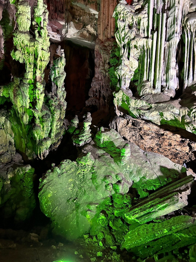
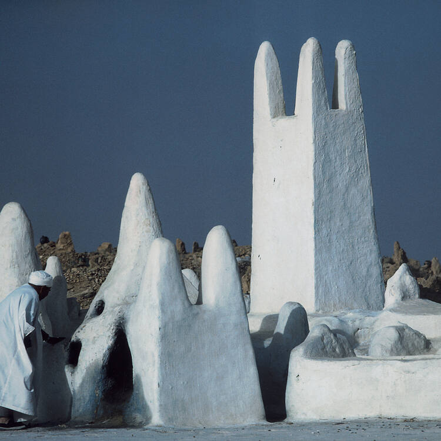

Les lieux touristiques à ne pas rater en Algérie
En 2020, seulement environ 600 000 touristes ont visité l'Algérie! Dans cet article, vous retrouverez quelques lieux touristiques incontournables à visiter, et pas des moindres. La beauté historique, culturelle et architecturale de ces endroits vous donnera certainement envie d'y aller par vous-même!
Le Mémorial du Martyr
Situé dans la capitale, Alger, au nord-centre du pays, le Mémorial du Martyr a été inauguré en 1982.
Haute de 92 mètres, cette structure a été construite pour honorer le sacrifice des martyrs durant la guerre d'indépendance (1954-1962). Surplombant la ville, elle rappelle aux habitants le sacrifice de leurs aïeux.
L'idée de sa construction venait du président Houari Boumediène.
Il s'agit vraiment d'un lieu touristique incontournable! Il permet à un touriste de s'immerger dans l'histoire récente du peuple.
Pour s'y rendre, il suffit de prendre un taxi.
Le Jardin d'Essai du Hamma
Connu comme étant l'un des premiers lieux de tournages de Tarzan, filmé en 1932, le jardin botanique d'Essai du Hamma, situé à Alger, est sans doute l'endroit parfait pour une belle et paisible marche.
Les grottes de Beni Add
Les grottes de Beni Add sont un pur plaisir pour les yeux. En effet, leur beauté naturelle est sans comparaison.
Ces grottes se situent à Tlemcen, dans la ville d'origine de ma famille!
J'ai eu l'occasion d'y aller dans les environs de 2015, et je recommande à quiconque de prendre le temps d'y aller !

Pour votre confort, ramenez de quoi vous couvrir car il peut faire assez froid à l'intérieur.
La Vallée du M'zab
Située dans le désert du Sahara, la Vallée du M'zab est un des magnifiques biens culturels que possède l'Algérie. Elle figure sur la liste du patrimoine mondial de l'UNESCO.

D'après l'UNESCO, elle a été construite au Xe siècle. Malgré le temps passé, elle reste encore aujourd'hui une référence pour les urbanistes à travers le globe.
L'UNESCO note aussi que jusqu' à ce jour, elle semble tout à fait intacte ! Ceci a pour mérite d'offrir une expérience encore plus enrichissante !
Pour un touriste, la visite du M'zab est une occasion de faire un saut dans le passé historique millénaire de l'Algérie.
Notez tout de même qu'il est très dangereux de vous aventurer dans le désert sans un guide de confiance.
Conclusion
En conclusion, l'Algérie n'est pas connue pour son tourisme, mais il y a tout de même des joyaux cachés à découvrir ! Allez-y !
Rendez à une station de taxi pour vous déplacer d'une ville à l'autre.
Les locaux vous attendent impatiemment !
Bien sûr, soyez toujours accompagnés.
Références
- Tripadvisor - Algérie : les meilleures choses à voir et à faire
- DonnéesMondiales - Le tourisme en Algérie
- AtlasObscura - Mémorial du Martyr
- UNESCO - Vallée du M'zab
- Flickr - Photo du jardin d'Essai du Hamma
- Flickr - Photo du Mémorial du Martyr
- Tripadvisor - Photo des grottes de Beni 'Add
- Flickr - Photo de la Vallée du M'zab
Note: il est très difficile de trouver des sources de qualité par rapport le tourisme en Algérie dû à un manque potentiel d'intérêt et de travaux sur le sujet.
Écrit par

Ali Abdeddaïm
Salut, c'est Ali ! Je suis actuellement en 4e année dans le programme d'informa...
En savoir plus